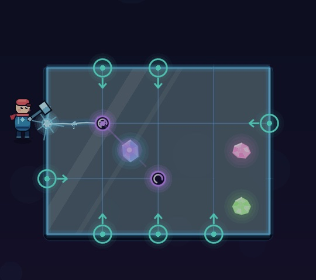

Головоломка для iPhone
Shiverglass
По одному кристаллу в осколке.
Выбирай точку удара, следи за трещинами и раскалывай стекло так, чтобы в каждом осколке остался один кристалл.
Как играть
Как играть
80 головоломок в восьми главах.
Как раскалывается стекло
Посмотри, как на первом уровне удар разделяет два кристалла, а на одном из следующих трещина проходит через пару порталов.
Открыть видео с геймплеем
Выбери точку удара
Найди линию, по которой можно разделить кристаллы.

Расколи стекло
Следи за трещиной и оставь по одному кристаллу в каждом осколке.


Проведи трещину через портал
В следующих главах появятся порталы и другие способы изменить путь трещины.